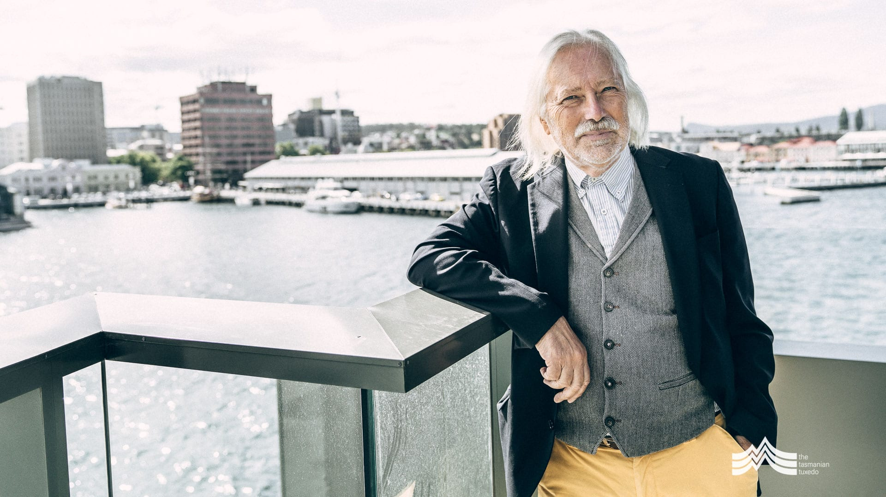
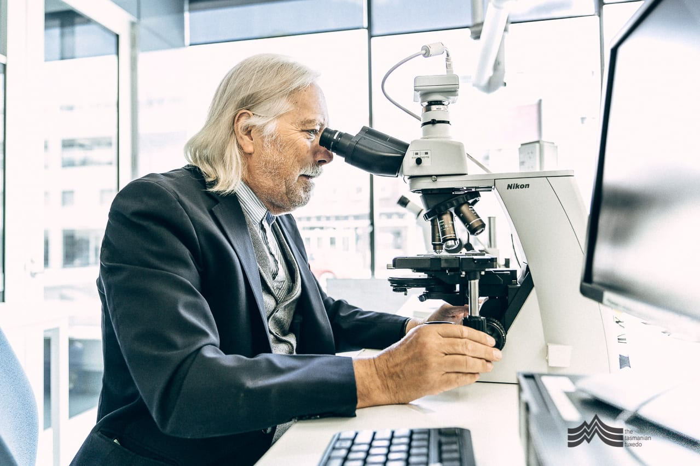
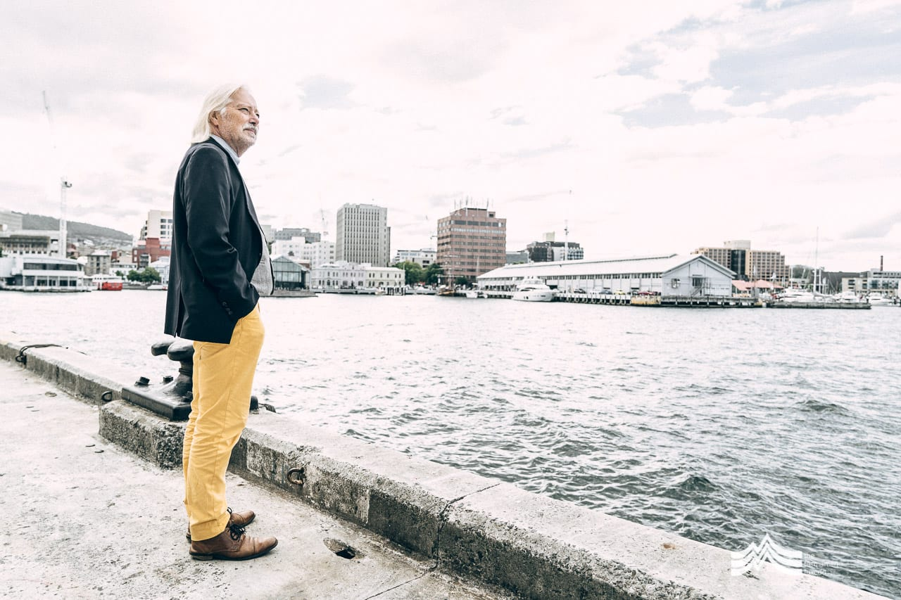
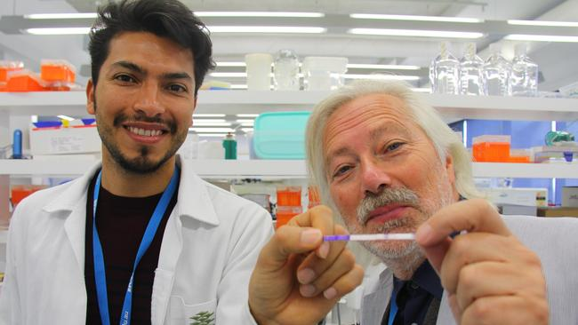

Professor Hallegraeff is a world renowned expert on algal blooms and currently resides in Hobart, Tasmania.
He has authored several books relating to microalgae and has helped shed light on the devastating impact algae can have on seafood.
In this edited conversation with Peter Green, Professor Hallegraeff spoke about his journey into microalgae research, the role plankton play in CO2 sequestration and gave great advice relating to following your passions.

You've spoken before about the influence your uncle had on you as a young boy. Could you expand a little on how your interest in algae and plankton really took off during those early days?
As a young boy I was always interested in nature. As a result, I was always very intrigued by my uncle's work as a veterinarian and would often help him with his practice. He was the one who gave me a little microscope for my 10th birthday.
One day, I placed a drop of water from a rainwater tank under my microscope and discovered a flurry of small, whirling organisms. I'm a fairly good artist so I started to make great drawings which I showed to my family-members and even school teachers. Yet noone had any idea what they were.
I became more and more excited and went to the library, where only two books had drawings which bore any resemblance to my own discovery. One of them came from the scientiest Leeuwenhoek who had designed the very first microscope. The other book spoke of these organisms as plankton, the food source of whales. Right there and then I decided to devote my life to the study of microscopic algae.
How did you end up studying toxic algal blooms?
I've been very lucky because only now do we really recognise how important algae are as the lungs of our planet. This is something that my professors at the University of Amsterdam did not tell me. The whole concept of harmful algal blooms was also hardly known. It was accepted that algal blooms happened in polluted water in the Netherlands but what about Australia?
When I moved to Australia people said that algal blooms only happened in the northern hemisphere. So, naturally, I started to look for myself and found algal blooms absolutely everywhere, including very toxic blooms. After this, I quickly realised that people were mainly interested in microalgae when they pose a threat to humans. As a result, I pivoted into algal blooms as an area of research.

How did you develop the area of algae bloom research in Australia?
I originally came to Australia to work in Sydney with CSIRO. Eventually this lab moved to Hobart, TAS and I had to begrugingly move with it. As I was unpacking my boxes, I decided to take a water sample near the new lab. The result? There was a huge, highly toxic bloom. I quickly sought a lab in Australia which could help me test for toxins because there was a huge shellfish industry just a few kilometres down the water. Nobody could help. I had to take drastic action and flew straight to Japan where we did the very first work describing the bloom.
I then helped setup testing labs in Sydney and Tasmania. That was the very start of Australia monitoring for seafood toxins.

How did your work with ballast water from ships arise?
After setting up a monitoring programme I started to question our discovery a little more. It seemed very strange. How was it possible that this was the only location this organism bloomed in Australia?
I realised that it was completely outside it's normal distribution and I came up with a wild concept. The ships coming into Tasmania must have brought it. These ships were bringing huge amounts of water from Japanese locations where this organism grows naturally.
That idea required a lot of science to validate. Using molecular genetics, we had to link it to an overseas donor population and that took me a long time. Once that was established, I drafted the very first version of the International Maritime Organisations Ballast Water Convention.

Could you expand a little on your recent article which addresses the perceived global increases in algal blooms?
It's been a very interesting process to write that paper. In most parts of the world good monitoring of algal blooms only started around 1985. That's when I started in Tasmania. As a result, good data only started to accumulate from the late 1980s. Over time, the question relating to a perceived interest in algal blooms was presented. I wrote a review in 1993 to answer this question which suggested that an increase in awareness of algal blooms was driving this apparent global increase in algal blooms. However, a lot of people mis-cited me, stating that I had claimed algal blooms were increasing all over the world.

Nevertheless, given the severity of what was at stake, I became part of a UNESCO group which sought to address this. After so much time had past, I suggested to the UNESCO forum that we should start a proper database which I started working in 2013. We now have nearly 10,000 records of algal blooms from all over the world on the database. After collecting the data, I started to crunch the numbers with an Australian colleague, Professor Anthony Richardson, who is a professor of mathematics. For this, we had to do all kinds of corrections, to account for data density and monitoring intensities. After all this it became very clear that there is no uniform global increase of algal blooms happening in the world. We started to look at the drivers behind the perceived increase and one very clear influence was a global increase in aquaculture. Aquaculture is very clearly cross-correlated with algal blooms.
You've spoken before about the role plankton play in reducing CO2 levels. Since you wrote you're book "Plankton: A critical creation", could you reflect on any recent discoveries relating to plankton's ability to drawdown CO2?
This concept originates from when people noticed the algal biomass present in the White Cliffs of Dover, UK. Coccolithophores are a single-celled alga which make the white-coloured calcite in the cliffs. After a certain point, people started to realise just how much algal biomass was present in the cliffs and how much carbon dioxide must have been drawndown by these organisms. It must have cooled the planet and we now have good models which can quantify this.
At the end of his career John Martin, an oceanographer, made a bold statement relating to iron deficiency in the oceans. He had looked at some parts of the open ocean where you have a lot of sunlight, nitrogen and phosphorus, yet still get very little algal growth. Iron was the answer. Iron was a limiting factor. It has to do with the fact ancient oceans used to be very rich in iron, but then an alga evolved which produce a lot of oxygen and oxidised the iron, removing it from the oceans. That gave way to the vast expanses of iron sediments in some parts of the world like Australia.
That's why a lot of algae today are limited by iron. If you sprinkle iron over the water, you immediately get an algal bloom. These results stimulated the science behind geoengineering. One of my colleagues, Professor Phil Boyd at the University of Tasmania is working on this. Unfortunately it's not that simple. Although yes, you can get an algal bloom at the surface using iron, the bloom is very quickly eaten by other organisms, which releases CO2 again. The consensus of scientific opinion is that you would have to fertilise a third of the world's ocean in this manner to make a tangible impact on carbon sequestration. The economics simply don't add up.
What advice might you give to your younger self or someone just starting out on this journey of research in microalgae?
Follow your heart. Do what you want to do, and at times, be stubborn. Only when you follow your heart can you give it your all. You want to be satisfied that you gave your best and used your talents optimally.
Which books might you recommend to someone trying to build ventures in this space?
I recently found a reprint of 20,000 Leagues Under the Sea by Joules Vern. I realise now just how visionary this book was! Captain Nemo knows all the oceans like the back fo his hand and it offers so much insight on fish and various topics like seaweed. It stumped me that I got so much more out of the book by reading it at the end of my career than at the start!

Interviewer: Peter Green